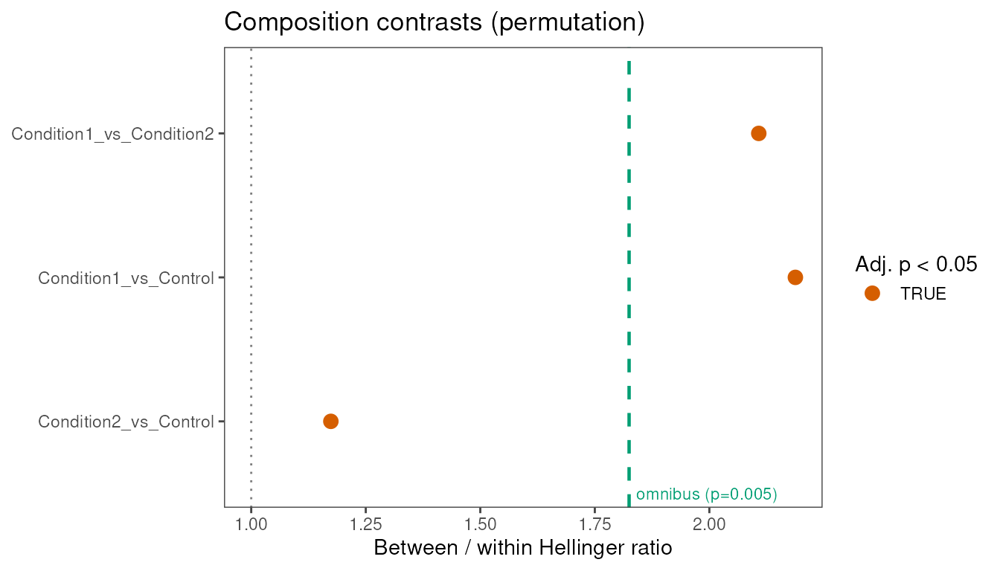
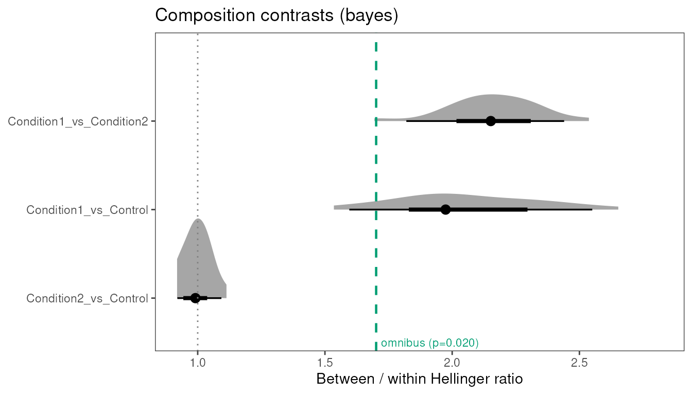

Hellinger enrichment for subject-level compositions
GW McElfresh
Methods: Paul Edlefsen
2026-07-28
Source:vignettes/hellinger-enrichment.Rmd
hellinger-enrichment.RmdUnderstanding whether categorical compositions differ between
experimental groups is critical when single-cell annotations are
summarized to subject-level frequencies. However, the scale of inference
is not the cell: it is the donor (or animal, or replicate) whose
multinomial counts define a composition vector on a probability simplex.
Cell-level cluster proportions can look sharply different while
subject-level compositions remain exchangeable across groups, and the
reverse can hold when sampling noise is large relative to an imposed
enrichment. Real cohorts rarely reduce to a single pairwise comparison,
so this vignette uses three groups: a Control, a Condition1 group with
an imposed enrichment, and a Condition2 group that remains exchangeable
with Control. Here, we illustrate
HellingerDistanceEnrichment on that synthetic cohort,
separating the conceptual framework (distance, ratio, contrasts,
inference) from the executable workflow that recovers which comparisons
carry signal.
Concepts
The inferential core below—Hellinger geometry on Jeffreys-softened subject compositions, the between/within distance ratio , observed-inclusive label permutation, and collapse/subset contrasts—follows methods developed by Paul Edlefsen. The nested Dirichlet Bayes option implements the composition-uncertainty step he outlined beyond fixed-composition permutation.
What is composition enrichment?
Composition enrichment asks whether experimental groups occupy different regions of the simplex once cells have been aggregated to subjects. At the cell scale, each row carries a category label (cluster, cell type, module score bin) and metadata that links that cell to a subject and a group. At the subject scale, those labels become counts: for subject and category , we observe cells (or events) in category , and the subject’s composition is the normalized frequency vector .
The scientific question is relational rather than descriptive. We are not asking which category is most abundant in one subject; we are asking whether between-group compositional distance exceeds within-group compositional distance across subjects. That framing mirrors pseudobulking in expression analysis: many cells collapse to one replicate-level observation, and hypothesis tests must respect the replicate as the unit of inference. A cluster that is enriched at the cell level within a single subject does not, by itself, establish group-level enrichment, because one subject’s multinomial draw can dominate the apparent pattern.
This package tests enrichment by comparing mean pairwise Hellinger distances among subjects in different groups to mean pairwise distances among subjects in the same group. The output is an effect-size ratio together with permutation or posterior-predictive p-values, optionally decomposed into omnibus and contrast-specific summaries.
Why Hellinger distance?
Once counts are normalized to frequencies, compositions live on a simplex, and Euclidean distance on raw proportions is a poor geometry: scaling one category compresses the others, and small zeros carry disproportionate weight. Hellinger distance measures separation between two frequency vectors and by comparing their square roots:
Values near 0 indicate similar compositions; values near 1 indicate near-disjoint support. The implementation computes from count vectors by forming frequencies internally, so the distance is always taken on normalized compositions rather than raw counts.
Sparse categories create a second problem: empirical frequencies of zero are not credible endpoints when counts are small. Before distances are evaluated, counts are softened with a Jeffreys-style pseudocount. For subject , category , and default ,
The default priorPseudocounts = 1/2 matches the
conjugate Dirichlet prior used in the Bayesian approach. Softening pulls
extreme proportions toward the simplex center and stabilizes pairwise
distances when some categories are rarely observed.
Hellinger distance is appropriate for asking whether compositions are separable in frequency space. It does not, by itself, identify which category drives a contrast, establish causality, or correct for differences in total cell yield between subjects beyond what is encoded in the normalized frequencies. Biological interpretation still requires knowing what the categories represent and whether the aggregation level matches the experimental question.
What is the enrichment ratio?
Given a subjects-by-categories count matrix, the package builds a symmetric subject-level Hellinger distance matrix , where using softened, normalized compositions. Subjects are then grouped by experimental label . For each group pair , the package summarizes distances as mean pairwise Hellinger distance within or between subject sets:
- Within-group (diagonal of the group summary): mean of for subjects both in group .
- Between-group (off-diagonal): mean of for subjects in group , in group .
The enrichment effect size is the ratio of average between-group distance to average within-group distance:
When , subjects in different groups are farther apart, on average, than subjects within the same group under this metric. When , group labels are consistent with exchangeable compositions relative to the observed within-group dispersion. The ratio is defined over pairwise subject distances, so each group must contribute at least two subjects; otherwise within-group means are not identifiable and inference stops with an error.
This ratio is the test statistic for both permutation and Bayes methods. It compresses a full distance matrix into a single scale-free quantity that can be compared across contrasts and simulation draws.
What is a contrast?
A contrast is a specified comparison among group labels on which is evaluated. The package always computes an omnibus contrast that includes all group levels present in the composition object. For groups, it also computes all pairwise contrasts ( comparisons) unless additional custom specifications are supplied.
The analogy to differential expression is deliberate but not exact.
In DE, a contrast selects linear combinations of model coefficients on
log-expression. Here, a contrast selects which subjects enter the
between/within distance summaries—either all groups (omnibus), a pair of
groups (subset), or a remapped grouping (collapse). Custom contrasts are
passed as a named list to contrasts=;
names become contrastId values in the result.
Two levels of p-value reporting matter in practice:
-
result$omnibus$pValue: unadjusted p-value for the global between/within ratio across all groups. -
result$contrasts$pValueandpAdj: contrast-specific p-values, withpAdjapplying Holm adjustment across the contrast table by default (pAdjustMethod = "holm").
Omnibus and pairwise contrasts therefore answer nested questions. A significant omnibus result indicates that at least some group separation exists under the ratio metric; pairwise contrasts localize that separation, with multiplicity control on the contrast table rather than on the omnibus line.
Permutation vs Bayes: related but non-equivalent questions
Both methods use label shuffling to define a null, but they differ in whether composition vectors are treated as fixed.
Permutation (method = "permutation").
Compositions are estimated once from softened counts, fixing the subject
distance matrix. Group labels are permuted among subjects
times (nPermutations), and
is recomputed on each shuffle. The one-sided p-value includes the
observed statistic in the numerator:
This tests whether group labels are exchangeable given the estimated compositions. It does not propagate uncertainty in the multinomial allocation of cells to categories.
Bayes (method = "bayes"). For each
posterior draw, subject compositions are sampled from a conjugate
Dirichlet posterior. With Jeffreys increment
,
where
is the count vector for subject
.
A full Hellinger distance matrix is rebuilt from that draw, and a nested
permutation null (same label shuffles, nPermutations per
draw) yields
and a draw-specific p-value. Across nPosterior draws, the
package reports:
- posterior-mean
(
effectSize), - posterior-mean p-value (
pValue), - 95% credible interval on
(
effectCiLow,effectCiHigh).
The Bayesian approach therefore nests composition uncertainty inside the label-exchange null. When counts are sparse, that nesting can widen credible intervals or inflate mean p-values relative to plain permutation, even when point ratios look similar. When counts are dense and the imposed enrichment is strong—as in the synthetic example below—the two approaches often agree on which contrasts are elevated, though they still answer formally different questions.
Execution
Build a synthetic long counts table
We begin with a known enrichment structure. A synthetic long table
carries one row per subject–category combination with columns
subjectId, category, group, and
n, matching the package’s default long-table schema.
Subjects are drawn from a multinomial allocation within each group so
that, before enrichment is imposed, Control, Condition1, and Condition2
are approximately exchangeable. We then multiply counts in
Condition1 for Category0 by a fixed factor,
introducing a modest, known enrichment in that group alone. Condition2
is left unmodified, so its compositions remain exchangeable with Control
under the generating process.
The internal functions build_synthetic_long_table() and
plant_group_structure() live in the package namespace for
vignette and test use; they are not exported, but they provide a
reproducible procedure for simulating compositional cohorts.
library(HellingerDistanceEnrichment)
set.seed(2026)
long_table <- HellingerDistanceEnrichment:::build_synthetic_long_table(
n_subjects_per_group = 6,
n_categories = 5,
groups = c("Control", "Condition1", "Condition2"),
seed = 2026
)
long_table <- HellingerDistanceEnrichment:::plant_group_structure(
long_table,
target_group = "Condition1",
target_category = "Category0",
boost = 4
)
head(long_table)
#> subjectId category group n
#> 1 Control_S01 Category0 Control 22
#> 2 Control_S01 Category1 Control 20
#> 3 Control_S01 Category2 Control 15
#> 4 Control_S01 Category3 Control 20
#> 5 Control_S01 Category4 Control 23
#> 6 Control_S02 Category0 Control 20
table(unique(long_table[, c("subjectId", "group")])$group)
#>
#> Condition1 Condition2 Control
#> 6 6 6Inspecting the head of the table confirms the long format: each
subject contributes
rows (one per category), and the imposed enrichment appears as larger
n in Condition1 for Category0
only. The subject–group table should show six subjects in each of the
three groups.
Extract compositions and run permutation inference
The long table is aggregated to a CategoryComposition
object: a subjects-by-categories count matrix with a named group factor.
ExtractClusterComposition() performs that coercion and
records provenance; missing subject–category combinations are
zero-filled.
CompareGroupCompositions() accepts either a
CategoryComposition or a long table directly. Here we
extract explicitly so the subject-scale object is visible before
inference.
composition <- ExtractClusterComposition(long_table)
composition
#> CategoryComposition with 18 subjects, 5 categories, and 3 groups
perm_result <- CompareGroupCompositions(
composition,
method = "permutation",
nPermutations = 200,
seed = 42
)
perm_result
#> HellingerEnrichmentResult (permutation): omnibus effectSize=1.8248, pValue=0.0050
#> 3 contrast(s) tested
perm_result$omnibus
#> $effectSize
#> [1] 1.824822
#>
#> $pValue
#> [1] 0.004975124
perm_result$contrasts
#> contrastId effectSize pValue pAdj
#> 2 Condition1_vs_Condition2 2.107850 0.004975124 0.01492537
#> 3 Condition1_vs_Control 2.187775 0.004975124 0.01492537
#> 4 Condition2_vs_Control 1.173828 0.049751244 0.04975124The printed HellingerEnrichmentResult summarizes the
omnibus ratio and p-value. perm_result$omnibus holds the
global effect size and unadjusted p-value;
perm_result$contrasts holds all three pairwise contrasts
with Holm-adjusted pAdj columns. Pairwise
contrastId values follow sorted group-level order
(Condition1_vs_Control,
Condition1_vs_Condition2,
Condition2_vs_Control). For the imposed enrichment, we
expect omnibus$effectSize > 1 and a small omnibus
p-value, with Condition1_vs_Control (and often
Condition1_vs_Condition2) carrying the enrichment, while
Condition2_vs_Control remains near exchangeability
(,
large p-values).
Custom contrasts (and optional collapse)
Default output already includes all pairwise contrasts. Custom
entries in contrasts= add named specifications on top of
that default set: a length-2 character vector selects a subset pairwise
comparison, while a list with groups and/or
collapse remaps or restricts group levels before distances
are computed. With three groups, a natural custom specification names
the two scientifically primary comparisons—enriched versus Control, and
the unmodified group versus Control—under stable identifiers for
downstream tables.
perm_custom <- CompareGroupCompositions(
composition,
method = "permutation",
nPermutations = 200,
contrasts = list(
condition1_vs_control = c("Control", "Condition1"),
condition2_vs_control = c("Control", "Condition2")
),
seed = 42
)
perm_custom$contrasts
#> contrastId effectSize pValue pAdj
#> 2 Condition1_vs_Condition2 2.107850 0.004975124 0.02487562
#> 3 Condition1_vs_Control 2.187775 0.004975124 0.02487562
#> 4 Condition2_vs_Control 1.173828 0.049751244 0.09950249
#> 5 condition1_vs_control 2.187775 0.004975124 0.02487562
#> 6 condition2_vs_control 1.173828 0.049751244 0.09950249The named contrasts reproduce those pairwise comparisons under
user-chosen identifiers—useful when contrast tables are merged across
analyses. Collapse becomes essential when experimental groups are
relabeled for analysis (for example, merging dose cohorts into a single
treated group) without rebuilding the count matrix by hand; see
?CompareGroupCompositions for the collapse
argument.
Bayesian approach
The Bayesian method reuses the same contrast specifications but
replaces fixed compositions with Dirichlet posterior draws. For vignette
execution time, keep nPosterior and
nPermutations small; production analyses should raise both
so posterior means and intervals stabilize.
bayes_result <- CompareGroupCompositions(
composition,
method = "bayes",
nPosterior = 20,
nPermutations = 50,
seed = 42
)
bayes_result$omnibus
#> $effectSize
#> [1] 1.515218
#>
#> $pValue
#> [1] 0.01960784
#>
#> $effectCiLow
#> [1] 1.329332
#>
#> $effectCiHigh
#> [1] 1.767033
bayes_result$contrasts
#> contrastId effectSize pValue effectCiLow effectCiHigh
#> 2 Condition1_vs_Condition2 1.689622 0.02352941 1.4613561 1.984081
#> 3 Condition1_vs_Control 1.798434 0.02254902 1.4917787 1.975221
#> 4 Condition2_vs_Control 1.115472 0.19705882 0.9561683 1.303130
#> pAdj
#> 2 0.06764706
#> 3 0.06764706
#> 4 0.19705882Interpretation differs slightly from permutation output.
bayes_result$omnibus$effectSize is the posterior mean of
,
not the single observed ratio at the softened point estimate. The
interval effectCiLow–effectCiHigh communicates
whether
remains stable under composition uncertainty. When the credible interval
excludes 1, enrichment is supported even if the posterior-mean p-value
is moderated by label shuffling within each draw. When the interval
spans 1 but permutation p-values are small, sparse counts may be driving
a fixed-composition signal that the Bayesian procedure correctly
weakens.
Plot contrasts
PlotCompositionContrasts() visualizes contrast-level
effect sizes. A dotted vertical line at
marks the exchangeability reference under this metric. When
showOmnibus = TRUE (default), the omnibus posterior-mean or
observed ratio appears as a dashed reference with its p-value
annotated—contrasts can then be read against both unity and the global
summary.
PlotCompositionContrasts(perm_result)
Permutation contrast panel with omnibus reference.
For permutation results, points are colored by whether Holm-adjusted
pAdj < 0.05. For Bayes results, half-eye plots show the
posterior density of each contrast’s
with nested intervals.
PlotCompositionContrasts(bayes_result)
Bayesian half-eye posterior densities for pairwise contrasts.
The two panels therefore display the same ratio scale with method-appropriate uncertainty. Permutation emphasizes discrete significance against the label null; Bayes overlays composition uncertainty on that same null via half-eye densities.
Closing interpretation
On the synthetic cohort, both approaches should recover the imposed
Condition1 enrichment in Category0: omnibus
and Condition1_vs_Control ratios above 1, with permutation
p-values and Bayesian intervals consistent with a real between-group
shift rather than label noise. The Condition2_vs_Control
contrast should remain near
,
illustrating that a significant omnibus result does not imply every
pairwise group differs from Control. That pattern is expected here
because the enrichment factor is large relative to multinomial sampling
noise, Condition2 was never modified, and every subject contributes
moderately dense counts across five categories.
The result does not generalize to all real cohorts. Sparse categories, unequal cell yields, or violated exchangeability (for example, batch confounded with group) can produce ratios that look enriched under fixed compositions but fail to hold once Dirichlet uncertainty is propagated. In those settings, the Bayesian approach is the more conservative assessment of whether an apparent contrast survives sampling variation in the compositions themselves.
Two practical constraints bound any analysis. First, each group must
include at least two subjects, because within-group distances are
defined from pairwise comparisons. Second, each subject must map to
exactly one experimental group in the metadata; conflicting group labels
for the same subject are rejected at composition build time. Within
those constraints, the workflow—long counts, subject composition,
contrast specification, ratio-based inference, and contrast
plotting—extends from this synthetic example to real
ExtractClusterComposition() inputs without changing the
inferential definition of
.